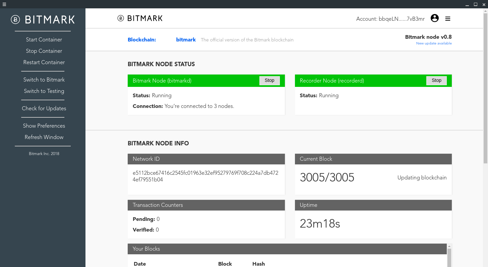

About
Hi! I am Zach Izzard, a sophomore Computer Science student at the University of Southern California. I was born and raised in Princeton, NJ, though I now reside in Los Angeles during the school year.
My passion lies in full stack development after designing a desktop application this past summer. Outside of that, helping others drives me. Whether working in local Los Angeles schools or volunteering at a charity for foster children at home, service has always been a big part of my life. One day I hope to combine these two passions.
Work
Bitmark Inc.
During the summer of 2018, I worked remotely for Bitmark Inc. and developed a desktop application to allow users to interact with the Bitmark node software. The software enables users to join the Bitmark blockchain network as a fully-validating peer through Docker containers.

The application is built using the Electron Framework and was designed to incorporate the previous web user interface that displayed the status of the Bitmark node software. Since the software is run through a Docker container, interaction with the container was previously restricted to a command line interface. Now users are able to interact with the container with a simple click of the mouse.
HackSC Junior
HackSC Junior is a student organization at the University of Southern California that holds pre-college hackathons at the University of Southern California aimed at increasing the participation of young girls and kids from underrepresented backgrounds in tech. In March of 2018, we held a hackathon with over 300 students from the Los Angeles area. Of those students, half of them identified female and over 70% were underrepresented minorities. After the hackathon, I was elected as the Head of Operations for 2018, the largest subdivision of the organization. As Head of Operations, I will be in charge of securing space to hold the event, organizing speakers to present at the event, schedule student volunteers, and manage general event structure.
Contact